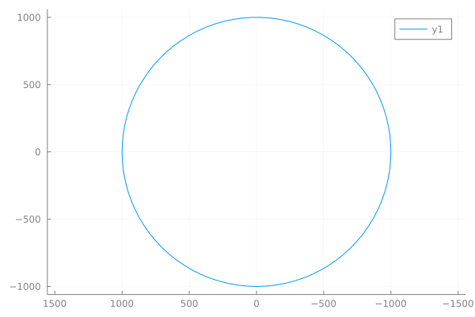
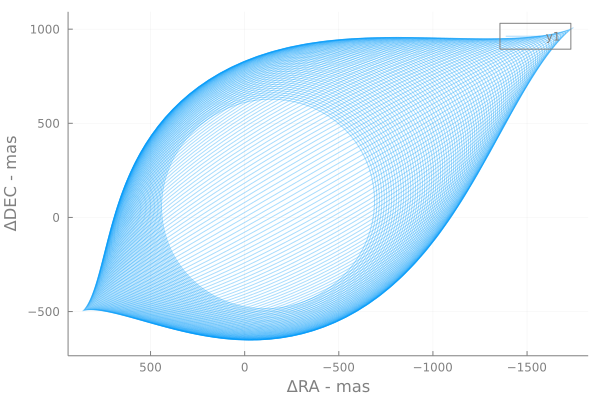
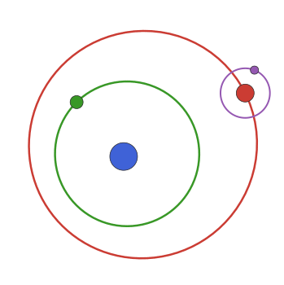

Plotting
This package defines a Plots.jl recipe for KeplerianElements.
Example:
elems = KeplerianElementsDeg(
a = 1.0,
M = 1.0,
i = 0,
e = 0,
ω = 0,
Ω = 0,
plx = 1000,
τ = 0,
)
plot(elems)
The orbit described by the elements is traced out automatically in equal steps of true anomaly (ν) which gives a smooth curve regardless of eccentricity.
The plot recipe sets the axes to have default aspect ratios and flips the right-ascension (horizontal) axis to increasing towards the left as it does when viewed in the plane of the sky.
Plotting multiple orbits
If you have an array of Keplerian orbits, you can plot them all in one go:
elements = [KeplerianElementsDeg(a=16+0.3i, i=i, e=0.25+0.001i, τ=0, μ=1, ω=0, Ω=120, plx=35) for i in 1:1:90]
plot(elements)This recipe scales down the opacity slightly so that you can see where the orbits overlap. Override by passing alpha=1.

Logo
To get more ideas for plotting, check out this example which generates an animated version of the logo for this page.
